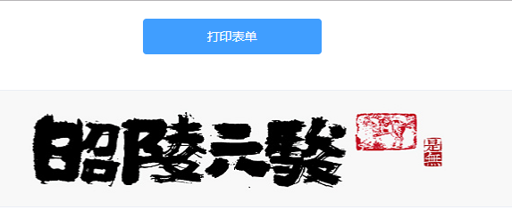

项目中遇到了要打印页面的功能,我感之前使用的是一个第三方的插件,但是不兼容IE,后来发现直接调用window的API就可以了,MMP

1 // 打印表单
2 printBtn() {
3 window.print();
4 return;
5 },然后有不想在打印页面里面显示的元素,直接通过CSS样式控制就行了
1 @media print {
2 .print_hide {
3 display: none;
4 }
5 .print_content {
6 margin-top: 20px !important;
7 }
8 }